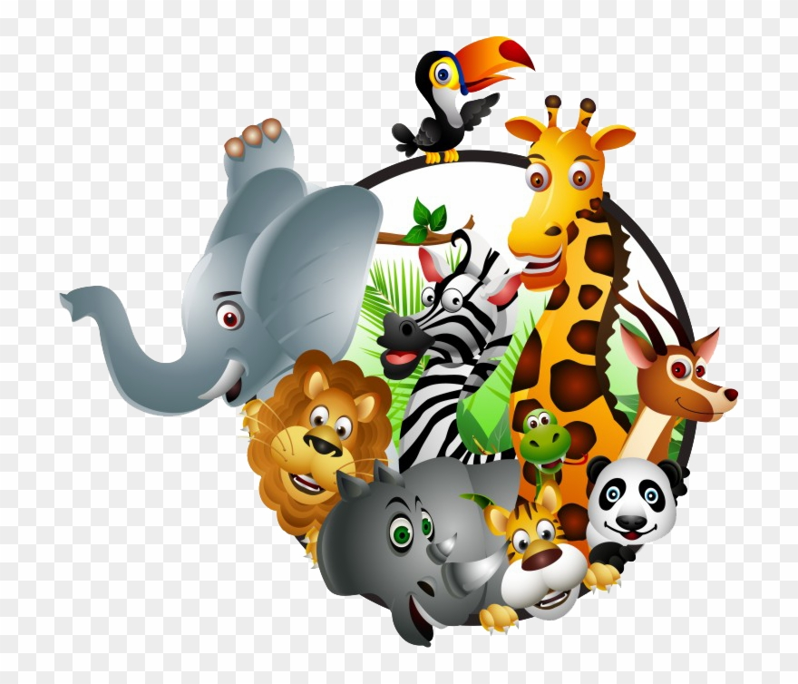
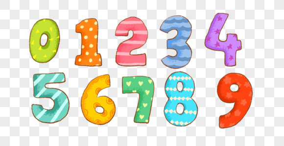

<ion-header [translucent]="true">
  <ion-toolbar color="darkblue">
    <ion-title  class="ion-text-center">
      Tabla didáctica de idiomas
    </ion-title>
  </ion-toolbar>
</ion-header>

<ion-content [fullscreen]="true">
  <ion-header collapse="condense">
    <ion-toolbar>
      <ion-title size="large" >Blank</ion-title>
    </ion-toolbar>
  </ion-header>

  <ion-list class="ion-padding">
    <ion-item lines="none" *ngFor="let item of list" (click)="reproducir(item)">
      <ion-button color="darkblue">
        
      </ion-button>
    </ion-item>
  </ion-list>

  <div class="ion-padding">
    <ion-fab id="f-boton-idioma" horizontal="end" vertical="top" slot="fixed" edge>
      <ion-fab-button color="dark">
        
        
        
      </ion-fab-button>
      <ion-fab-list>
        <ion-fab-button color="light" (click)="cambiarIdioma(0)">
          
        </ion-fab-button>
        <ion-fab-button color="light" (click)="cambiarIdioma(1)">
          
        </ion-fab-button>
        <ion-fab-button color="light" (click)="cambiarIdioma(2)">
          
        </ion-fab-button>
      </ion-fab-list>
    </ion-fab>

    <ion-fab id="f-boton-idioma" horizontal="start" vertical="top" slot="fixed" edge>
        <ion-fab-button>
          
        </ion-fab-button>
        <ion-fab-list>
          <ion-fab-button color="light" (click)="cambiarTipo(0)">
            
          </ion-fab-button>
          <ion-fab-button color="light" (click)="cambiarTipo(1)">
            
          </ion-fab-button>
          <ion-fab-button color="light" (click)="cambiarTipo(2)">
            
          </ion-fab-button>
        </ion-fab-list>
    </ion-fab>

    <ion-item>
      <ion-label (click)="logout()" style="margin-left: 5%; color: blue;"> Salir </ion-label>
    </ion-item>
  </div>
</ion-content>
